- 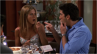s06e1- "The One After Vegas"
A hungover Ross and Rachel are shocked to discover they are husband and wife. Joey and Phoebe have a cross-country adventure.
- s06e2 - "The One Where Ross Hugs Rachel" 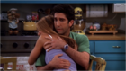
When Monica and Chandler tell Rachel that they are moving in together, she mistakenly believes that all three will be roommates. Phoebe discovers that Ross hasn't annulled his marriage to Rachel.
- s06e3 - "The One With Ross' Denial"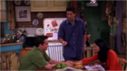
Monica and Chandler argue about what to do with Rachel's room after she moves out. Ross suggests that Rachel move in with him.
- s06e4 - "The One Where Joey Loses His Insurance" 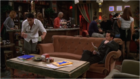
Joey gets a hernia just as he learns his health insurance has lapsed. When a psychic predicts she'll die within a week, Phoebe plans to make the most of her final days.
- s06e5 - "The One With Joey's Porsche" 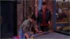
Joey finds keys to a Porsche and pretends the car is his to impress women. Rachel tries to have her marriage to Ross annulled on the basis of his mental instability.
- s06e6 - "The One On The Last Night" 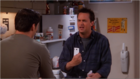
While boxing up Rachel's belongings, the girls reminisce about their time spent as roommates. Joey's pride forces Chandler to invent a creative way to lend him money.
- s06e7 - "The One Where Phoebe Runs" 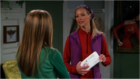
Phoebe's unorthodox, attention-getting jogging style embarrasses running mate Rachel. Chandler tries to surprise Monica by cleaning the apartment but forgets where everything goes therefore, seeking help from Ross.
- s06e8 - "The One With Ross' Teeth" 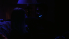
Rumor has it that Rachel's boss Ralph Lauren made a romantic pass at Phoebe. Ross has a "bright" idea to impress his date.
- s06e9 - "The One Where Ross Got High" 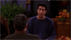
Monica hosts Thanksgiving and Chandler uses the occasion to try and win her parents over. Rachel tests her confused culinary skills on dessert.
- s06e10 - "The One With The Routine"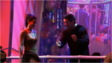
Joey, Ross and Monica attend a taping of Dick Clark's New Year's Rockin' Eve. Joey has special plans for his roommate Janine at the midnight hour.
- s06e11 - "The One With The Apothecary Table" 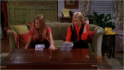
After double-dating, Joey learns of Janine's dislike for Monica and Chandler. Rachel tries to convince Phoebe that her cute new apothecary table is a priceless antique.
- s06e12 - "The One With The Joke" 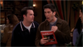
When Ross gets a joke printed in Playboy, Chandler claims credit for it. Joey reluctantly takes a job as a waiter at Central Perk.
- s06e13 - "The One With Rachel's Sister" 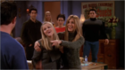
When her sister Jill visits, Rachel worries about the sparks that seem to fly between her and Ross. Monica tries to seduce Chandler, despite having the flu.
- s06e14 - "The One Where Chandler Can't Cry" 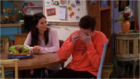
Rachel forces Ross to cancel his date with her sister. Phoebe discovers she's being mistaken for a porn star. Chandler admits he hasn't been able to cry since he was a child.
- s06e15 - "The One That Could Have Been, Part 1" 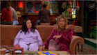
The gang ponders what might have been if: Ross had stayed with his lesbian wife; a married Rachel had fallen for Days of Our Lives star Joey
- s06e16 - "The One That Could Have Been, Part 2" 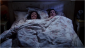
A portly Monica had been obsessed with losing her virginity; Chandler had been a struggling writer; and Phoebe had been a stockbroker.
- s06e17 - "The One With Unagi" 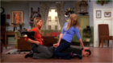
Ross tries to teach martial arts to Rachel and Phoebe. Joey hires a look-alike to pose as his twin brother for a medical experiment.
- s06e18 - "The One Where Ross Dates A Student" 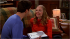
Ross flirts with danger when he dates an attractive student. After a fire damages their apartment, Rachel and Phoebe are forced to move in with their friends.
- s06e19 - "The One With Joey's Fridge" 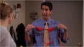
When Rachel needs a date for a charity event, Monica and Phoebe compete to find her the best escort. Ross obsesses about his girlfriend spending spring break in Florida. Joey's refrigerator breaks.
- s06e20 - "The One With Mac And C.H.E.E.S.E." 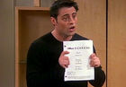
Joey gets an audition for the lead in a TV show, which sparks memorable and bizarre flashbacks for the gang.
- s06e21 - "The One Where Ross Meets Elizabeth's Dad" 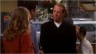
Ross dreads meeting his college girlfriend's disapproving father. When Joey insults his robot co-star, he jeopardizes his future on the show.
- s06e22 - "The One Where Paul's The Man" 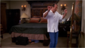
Despite Paul's threats, Ross and Elizabeth secretly head off to her family's mountain cabin. Paul and Rachel have exactly the same plan.
- s06e23 - "The One With The Ring" 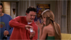
Chandler asks Phoebe's help in choosing a ring for Monica. Rachel regrets pushing Paul to express his feelings.
- s06e24 - "The One With The Proposal, Part 1" 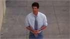
The big evening has arrived, but Chandler's romantic plans are ruined when Monica's ex-boyfriend appears. Things sail way off course when Rachel, Phoebe and Joey attend a charity auction.
- s06e25 - "The One With The Proposal, Part 2" 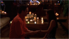
Rachel and Phoebe arrange "backups". Chandler tries to win Monica back after he fears he ruined things.